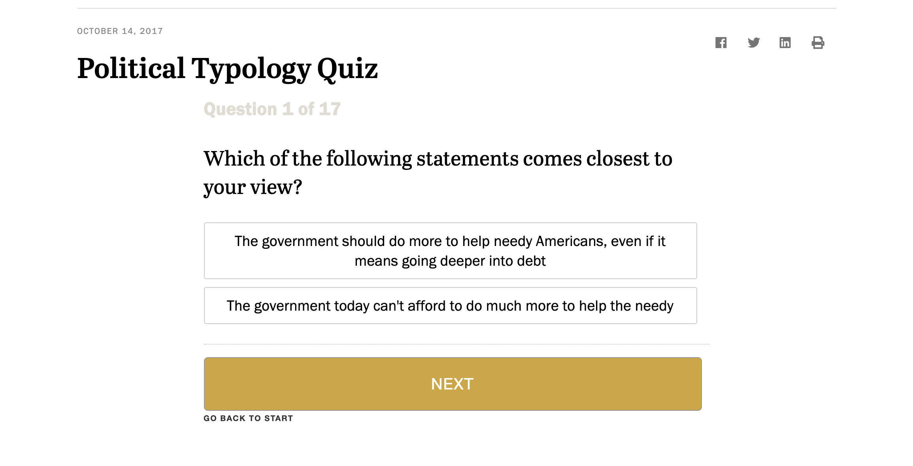

Pew Research Political Typology Quiz

The Pew Research Center Political Typology Quiz is an interactive web-based experience that takes user information and delivers a "result" at the end. I chose a quiz-type of interaction because it is common for people to want to take quizzes and compare themselves when it comes to political alignment. As I have focused my area of study for this project to how the digital age and interactivity affect political participation/knowledge, I think it is important to look at common and accessible interactive webpages that people may come across while doing political research. A big part of the process is finding out about yourself and your principles, and some people need assistance translating their principles into where they may fall on the political spectrum in order to understand it as a whole. In this case, I think the quiz works well. It takes the information that the user selects and uses that to make a determination about where they fall on the political spectrum.
Each question is separated on its own page to limit the information the user must absorb per screen, which is a wise decision in terms of user experience because the content is usually difficult to digest. The typical audience for this type of interaction would likely be someone who is not very knowledgeable about politics, but eager to know more. I think the quiz interaction is beneficial to the audience because it not only makes users choose between scenarios/beliefs, but prompts them to think about issues they may not have considered before. While it is a relatively linear experience just going from one question to the next, there is logical navigation and satisfying visual effects that make the user interface work very well. There is little to no emotional effect from using this interaction. Pew Research strives to be a non-partisan, objective source for a wide range of topics, so most content a user will find there will be rather matter-of-fact and not attempt to persuade or have an emotional appeal.